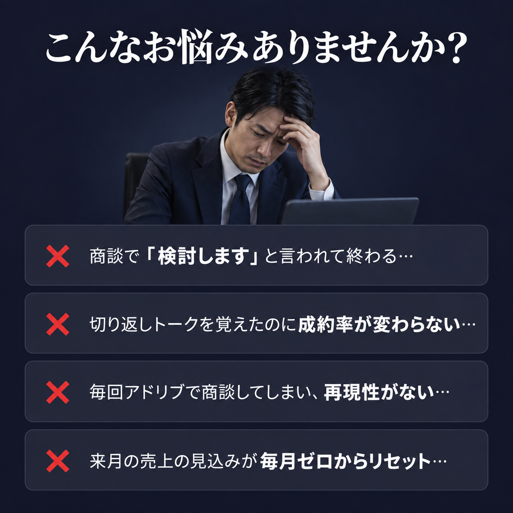

さちさん
結婚式 前撮り営業
▶ 受講前：商品説明がメインで、毎回なんとなく商談していた
▶ 受講後の成果
成約率 20% → 40%
▶ 変化のポイント
・商品説明からヒアリングメインの営業に切り替え
・お客さんが「欲しい」と思う順番で話す構成に変更
・営業の順番を変えただけで成約率が2倍に
さとみさん
量子力学セミナー講師
▶ 受講前：失注理由が毎回わからず、違う場所ばかり直していた
▶ 受講後の成果
セミナーから5件成約
売上200万円超
▶ 変化のポイント
・商談録画から本当に直すべき場所を特定するやり方に変更
・「何が悪かったかわからない」→「次はここを直せばいい」が明確に
・毎回違う場所を直す迷走がなくなった
ゆうとさん
人材紹介営業
▶ 受講前：営業歴半年、毎月2〜3件で伸び悩み
▶ 受講後の成果
月の成約数 2〜3件
→ 5〜6件（2ヶ月後以降）
▶ 変化のポイント
・「説得する営業」から質問で気づかせる営業に変更
・相手が自分で「必要だ」と気づく質問設計を導入
・説得しないから切り返しも起きなくなった
まるさん
マーケティングコンサルタント
▶ 受講前：営業の型がなく、成約が安定しなかった
▶ 受講後の成果
売上 200万円（初月）
→ 600万円（半年後）
▶ 変化のポイント
・潜在層にも売れる営業構造を実装
・「まだ必要性を感じていない人」にも売れる商談設計に
・初月から大型成約を実現し、半年で売上3倍に成長
やすのぶさん
集客コンサルタント
▶ 受講前：現状を聞いて提案する営業で、成約率が低迷
▶ 受講後の成果
成約率 10% → 35%（1ヶ月）
▶ 変化のポイント
・現状ヒアリング→提案から、気づいていない問題に気づかせてから提案に変更
・切り返しが起きづらい商談設計を導入
・SNSで切り返し集を集める日々→切り返しを勉強すること自体を撤廃
この方達も以前は
極める
覚える
説明する
が大事だと思っていました…
でも実際は、
それを続けるほど
成約率が上がりにくくなっています。
じゃあ、成約率が上がった人は
何をしたのか？
変わったのは、
"順番"を自分の商談に
合わせて整理しただけ。
ただ、商品も相手も商談の流れも人それぞれ。
"順番"は同じでも、当てはめ方は一人ひとり違う。
大事なのは
自分の商品にどう当てはめるか
自分の商談のどこを直すか
明日から何を変えるか
それを一緒に整理するのが
無料の営業診断です。
無料営業診断でわかること
01 あなたの商談で「検討します」が出る本当の原因
02 営業の型をあなたの商品にどう当てはめるか
03 明日の商談から何を変えればいいかの具体的な一手
PROFILE
菅谷秀翔
セールスプロデューサー
魚を捌くキャリアからスタートし、個人事業主として採用特化SNSマーケティング・コーチング業を経験。その後、営業代行会社も経て、独立後含めこれまでに20商品以上の営業を実践。無形高単価サービスで月1,800万円の売上を達成。
現在はその経験をもとに、営業の「型」をその人の事業にカスタムで実装する「セールスプロデュース」を提供。スクリプト作成・商談設計・クロージング設計で成約率を改善している。
営業を「センスや感覚」ではなく、誰でも改善できる技術に変える。それが僕のミッションです。
この動画を見た後、
あなたの営業に
「型」を当てはめてみたいと思ったら、
無料の営業診断で
一緒に整理しましょう。
あなたの商談を聞いて、
成約率が上がらない本当の原因を診断します。